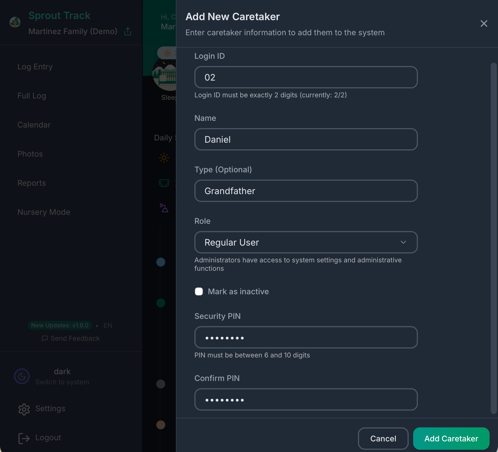
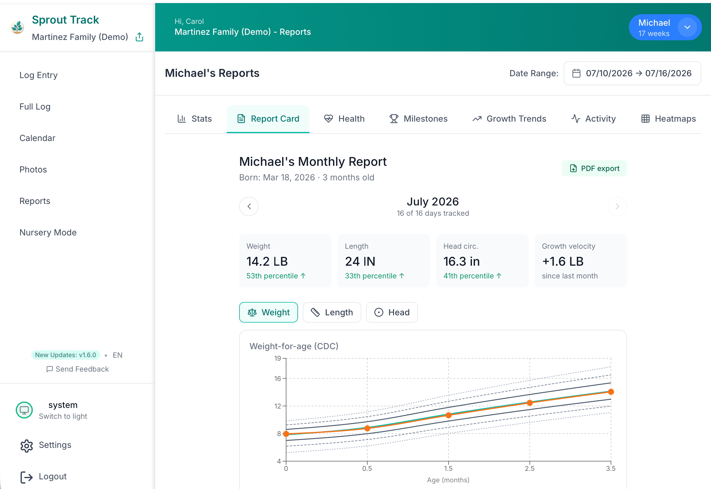
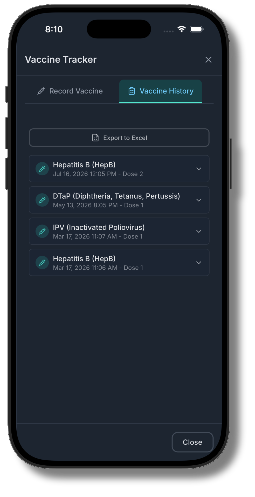
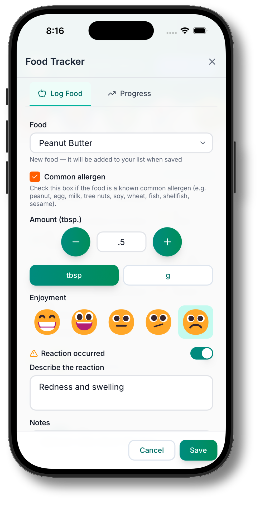

Sixteen kinds of entries, shared with everyone who helps, readable at a glance when the pediatrician asks.
Every entry takes a couple of taps, remembers your last amounts, and records who logged it.
One family, many hands. Invite the other parent, grandparents, and the nanny with a link and a PIN. Everyone logs into the same timeline, and every entry is signed with who did it.

Sprout Track speaks eleven languages, and every caretaker picks their own. Mom logs in English, oma logs in Deutsch. Same timeline, same entries.
Daily summaries roll up awake time, sleep, ounces, and diapers. Calendar and report views show the week’s pattern, and a heatmap makes the sleep regression visible before you feel it.

Record each dose with the provider, add notes, and attach the clinic’s PDF or a photo of the card. The whole history lives next to the rest of the log, not in a drawer at home.

Log every new food with how it went, and flag reactions the moment you see them. The first 100 foods tracker turns starting solids into a checklist you can actually finish, and a record your pediatrician will love.

The same code that runs sprout-track.com is on GitHub with 322 stars. Host it yourself for free, or let us run it for $2.99 a month. Either way the data is yours: export it anytime.
No card required. Then $2.99/month, cancel anytime.